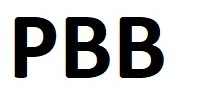

<mat-toolbar class="container">
  <a class="logo" href="/home">
    
  </a>

  <span class="example-spacer"></span>

  <button class="link-button" mat-button>About</button>
  <button class="link-button" mat-button>Portfolio</button>
  <button class="link-button" mat-button>Team</button>
  <button class="link-button" mat-button>Services</button>
  <button class="link-button" mat-button>Health and safety</button>
  <button class="link-button" mat-button>Contact</button>

  <span class="link-groups-spacer"></span>

  <button class="link-button" mat-button routerLink='/earthing-graph'>Software</button>
  <button *ngIf="!userIsAuthenticated" class="link-button" mat-button [matMenuTriggerFor]="menu">Signup</button>
  <mat-menu #menu="matMenu">
    <button class="link-button" mat-menu-item routerLink='/login'>Login</button>
    <button class="link-button" mat-menu-item routerLink='/registration'>Register</button>
  </mat-menu>
  <button *ngIf="userIsAuthenticated" class="link-button" mat-button (click)="logout()">Logout</button>

  <span class="after-last-button"></span>
</mat-toolbar>